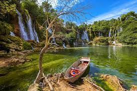

Lugares que você precisa conhecer na Europa
Cachoeiras Kravice - Bosnia Herzegovina

- Localização:
As Cachoeiras Kravice estão situadas no rio Trebižat, perto da cidade de Ljubuški, na região da Herzegovina,
Bósnia e Herzegovina.
- Beleza Natural:
Kravice é conhecida por suas espetaculares quedas d'água, que têm cerca de 25 metros de altura e se estendem
por uma largura de aproximadamente 120 metros. A água cai de forma majestosa, criando uma vista incrível.
- Piscinas Naturais:
Na base das cachoeiras, formam-se piscinas naturais. Essas áreas são populares para nadar, mergulhar e
desfrutar da água cristalina. É comum as pessoas relaxarem nas margens dessas piscinas.
- Cenário Cênico:
A paisagem ao redor das Cachoeiras Kravice é caracterizada por vegetação exuberante e rochas calcárias. A
combinação de águas verde-azuladas e o entorno natural cria um cenário verdadeiramente
- Acesso e Visitas:
Geralmente, a área é acessível a pé ou de barco. Muitos visitantes optam por visitar as Cachoeiras Kravice
como parte de um passeio pela região.
- Época Recomendada:
A melhor época para visitar é durante os meses mais quentes, de primavera a outono, quando as condições são
ideais para atividades ao ar livre.
- Atrações Próximas:
Explique se há outras atrações notáveis na região que os visitantes podem querer explorar, como grutas,
vilarejos pitorescos ou locais históricos.
- Conservação e Preservação:
Destaque a importância da conservação e preservação do ambiente natural ao redor das Cachoeiras Kravice.
Vamos para o proximo destino
Seguindo a Viagem
Esqueçi o passaport
vamos voltar ao inicio